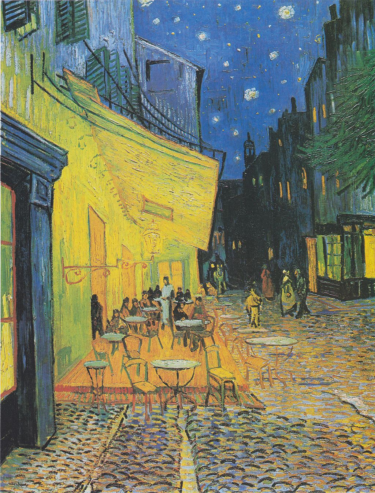

<head>
<meta charset="UTF-8" />
<meta name="keywords" content="drawing, painting" />
<meta name="description" content="drawings by Sunjy" />
<title>Sunjy</title>
<link rel="shortcut icon" type="image/x-icon" href="../../mImages/mCommon/favicon.ico" media="screen" />
<link rel="stylesheet" type="text/css" href="../../mCsses/mCommon/mCssA.css" />
<link rel="stylesheet" type="text/css" href="../../mCsses/mCommon/mCssB.css" />
<link rel="stylesheet" type="text/css" href="../../mCsses/mCommon/mCssC.css" />
<link rel="stylesheet" type="text/css" href="../../mCsses/mCommon/mCssD.css" />
<link rel="stylesheet" type="text/css" href="../../mCsses/mContent/mCssA.css" />
<link rel="stylesheet" type="text/css" href="../../mCsses/mContent/mCssB.css" />
<link rel="stylesheet" type="text/css" href="../../mCsses/mContent/mCssC.css" />
<link rel="stylesheet" type="text/css" href="../../mCsses/mContent/mCssD.css" />
</head>
<script type="text/javascript" src="../../mScripts/mContent/mContentAA.js" /></script>
<script type="text/javascript" src="../../mScripts/mContent/mContentAB.js" /></script>
<script type="text/javascript" src="../../mScripts/mContent/mContentAC.js" /></script>
<script type="text/javascript" src="../../mScripts/mContent/mContentAD.js" /></script>
<script type="text/javascript"></script> 
<script type="text/javascript">
document.write('<div class="mImgAbsolute"></div>');
/*
document.write('<p class="mFontSizeBColor" />From a white paper...</p>');
document.write('<table class="center"><tr><td>');
document.write('');
document.write('</td></tr></table>');
*/
</script>


<script type="text/javascript">
document.write('<p class="mFontSizeBColor" />Café Terrace at Night</p>');
document.write('<p class="mFontSizeSColor" />“Café Terrace at Night” by Vincent van Gogh depicts the terrace of the café on the Place du Forum in Arles, France in the night. The night is painted with no black in the sky, it features only a blue sky with Van Gogh’s unique star motifs.<br><br>The Cafe is illuminated with sulfur pale yellow and citron green. Van Gogh painted the view looking south towards the lit terrace of the famous coffee house.<br><br>He contrasted the brightly lit Cafe with the darkness of the rue du Palais, which led up to the wall of buildings and towards the tower of a former church, which is now Musée Lapidaire.<br><br>On the right, Van Gogh painted the light from the shop windows as well and some green branches of the trees surrounding the place.<br><br>The painting is not signed, but van Gogh mentioned it in three letters. After finishing this painting, he wrote a letter to his sister:<br><br>“On the terrace, there are little figures of people drinking. A huge yellow lantern lights the terrace, the façade, the pavement, and even projects light over the cobblestones of the street, which takes on a violet-pink tinge. The gables of the houses on a street that leads away under the blue sky studded with stars are dark blue or violet, with a green tree. Now there’s a painting of night without black. With nothing but beautiful blue, violet, and green, and in these surroundings, the lighted square is colored pale sulfur, lemon green. I enormously enjoy painting on the spot at night.”<br></p>');
document.write('<table class="center" /><tr><td>');
document.write('<br>The Cafe is illuminated with sulfur pale yellow and citron green. Van Gogh painted the view looking south towards the lit terrace of the famous coffee house.<br><br>He contrasted the brightly lit Cafe with the darkness of the rue du Palais, which led up to the wall of buildings and towards the tower of a former church, which is now Musée Lapidaire.<br><br>On the right, Van Gogh painted the light from the shop windows as well and some green branches of the trees surrounding the place.<br><br>The painting is not signed, but van Gogh mentioned it in three letters. After finishing this painting, he wrote a letter to his sister:<br><br>“On the terrace, there are little figures of people drinking. A huge yellow lantern lights the terrace, the façade, the pavement, and even projects light over the cobblestones of the street, which takes on a violet-pink tinge. The gables of the houses on a street that leads away under the blue sky studded with stars are dark blue or violet, with a green tree. Now there’s a painting of night without black. With nothing but beautiful blue, violet, and green, and in these surroundings, the lighted square is colored pale sulfur, lemon green. I enormously enjoy painting on the spot at night.”<br>" />');
document.write('</td></tr></table>');
</script>


